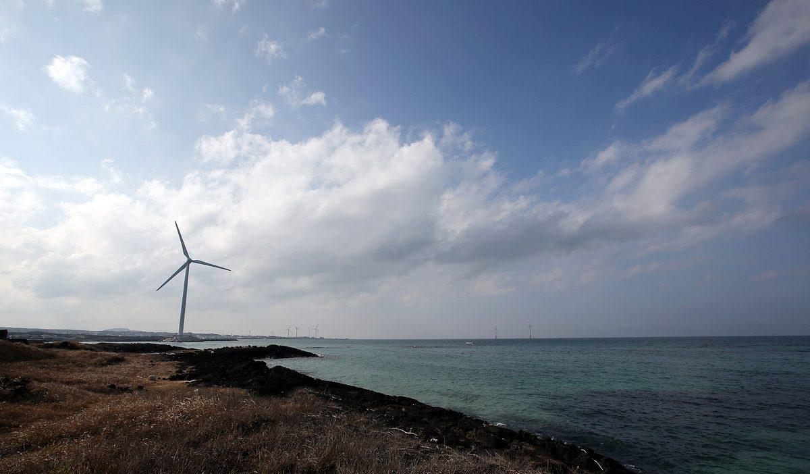

제주 한림해상풍력 인근 3개 마을, 총사업비 4.7% 투자해 배당…추자해상풍력은 '주민 1순위·도민 2순위' 투자 구상

기존 풍력은 당기순이익 17.5%를 공유화 기금으로…추자 재공모는 연 1,300억 원 고정 조건 대신 다른 방식 검토, 2.37GW 전력 육지 송전엔 해저연계선 900MW 한계
제주 한림해상풍력단지 인근 3개 마을이 총사업비의 4.7%를 투자해 해마다 운영 수익 일부를 배당받는 주민참여형 모델을, 제주도가 추자해상풍력에도 적용하겠다는 계획을 세웠다. 100MW 규모로 국내 최대 해상풍력단지인 한림해상풍력의 사업자는 투자한 주민과 별도로 도민 전체를 위한 공유화 기금도 내고 있다. 도는 추자해상풍력의 투자자를 추자 주민에서 일반 도민까지 넓혀 투자 기회를 1순위 추자 주민, 2순위 일반 도민에게 주는 방식을 구상하고 있으며, 경제적 여력이 없는 도민이 투자에서 밀려나지 않게 할 방안도 찾고 있다. 제주도는 그동안 풍력 사업자와 약정을 맺어 통상 당기순이익의 17.5%를 공유화 기금으로 받아 에너지 취약계층 냉난방비에 써 왔으나, 추자에는 해마다 최소 1,300억 원의 고정 이익공유금을 조건으로 걸었다가 유찰됐고, 재공모에서는 이 조건을 없애고 사업자가 환원 방식을 제안하게 하는 방안을 검토하고 있다. 2.37GW 규모에 총사업비 16조~24조 원으로 추정되는 추자 단지는 도의 2035년 해상풍력 목표 5GW의 절반가량을 맡지만, 먼바다 전력을 모두 육지로 보내려 해도 제주~육지 해저연계선 3개의 송전 용량은 합쳐 900MW이고 제주 전력을 육지로 보낼 수 있는 것은 3호기뿐이다. 도 관계자는 기존 풍력 사업자처럼 "순익의 일정 비율을 기금으로 내는 방안도 검토 대상"이라고 말했다.
시민에너지 관점
한림의 3개 마을 4.7% 지분과 기존 풍력의 순이익 17.5% 공유화 기금이 함께 굴러가고 있다는 것은, 사업자가 내는 환원금과 주민이 갖는 지분이 둘 중 하나가 아니라 함께 설계될 수 있다는 뜻이다. 수조 원짜리 해상풍력에서 주민 지분이 무슨 의미가 있느냐는 물음이 나올 수 있지만, 덴마크 서해안 흐비데 산데(Hvide Sande) 항구 풍력처럼 지역 재단과 인근 주민이 지분을 나눠 갖고 그 수익을 항구 살림에 다시 쓴 예에서 보듯, 중요한 것은 지분의 크기보다 수익이 지역 안에서 돈다는 구조다. 추자의 1순위·2순위 투자 구상도 여력 없는 도민을 위한 공공 융자나 기금 출자 같은 장치가 함께 오지 않으면 가진 사람만의 투자로 끝날 수 있다. 제주도는 재공모 지침에 투자 순위뿐 아니라 주민·도민 지분의 최소 비율과 저소득 도민 참여 재원을 숫자로 적어 넣어야 한다.
출처: 한라일보 2026-10-28 이상민 원문 보기
済州・翰林洋上風力の周辺3集落、総事業費の4.7%を出資して配当…楸子洋上風力は「住民が第1順位・道民が第2順位」の出資構想
既存の風力は当期純利益の17.5%を共有化基金に…楸子の再公募は年1,300億ウォンの固定条件に代わる方式を検討、2.37GWの電力を本土へ送るには海底連系線900MWの壁
済州の翰林（ハンリム）洋上風力発電団地の周辺3集落が総事業費の4.7%を出資し、毎年運営収益の一部を配当として受け取る住民参加型モデルを、済州道が楸子（チュジャ）洋上風力にも適用する計画を立てた。100MW規模で韓国最大の洋上風力団地である翰林洋上風力の事業者は、出資した住民とは別に、道民全体のための共有化基金も拠出している。道は楸子洋上風力の出資者を楸子の住民から一般の道民にまで広げ、出資の機会を第1順位に楸子住民、第2順位に一般道民へ与える方式を構想しており、経済的な余裕のない道民が出資から取り残されないようにする方策も探っている。済州道はこれまで風力事業者と協約を結び、通常は当期純利益の17.5%を共有化基金として受け取ってエネルギー弱者の冷暖房費に充ててきたが、楸子では毎年最低1,300億ウォンの固定利益共有金を条件に掲げて不調に終わり、再公募ではこの条件をなくして事業者が還元方式を提案できるようにする案を検討している。2.37GW規模で総事業費16兆〜24兆ウォンと推定される楸子団地は、道の2035年洋上風力目標5GWの半分ほどを担うが、遠い沖合の電力をすべて本土へ送ろうとしても、済州〜本土の海底連系線3本の送電容量は合わせて900MWで、済州の電力を本土へ送れるのは3号線だけだ。道の関係者は、既存の風力事業者と同様に「純利益の一定割合を基金として拠出する方式も検討対象」だと述べた。
市民エネルギーの視点
翰林の3集落による4.7%の出資と、既存風力の純利益17.5%の共有化基金が並行して動いていることは、事業者が払う還元金と住民が持つ持ち分が二者択一ではなく、組み合わせて設計できることを意味する。数兆ウォン規模の洋上風力で住民の持ち分に何の意味があるのかという疑問も出うるが、デンマーク西海岸のフヴィーデ・サンデ（Hvide Sande）港の風力のように、地域の財団と近隣住民が持ち分を分け合い、その収益を港の運営に再び回した例が示すとおり、大切なのは持ち分の大きさより、収益が地域の中で循環する仕組みだ。楸子の第1順位・第2順位の出資構想も、余裕のない道民のための公的融資や基金出資といった仕組みが伴わなければ、持てる者だけの投資に終わりかねない。済州道は再公募の指針に、出資の順位だけでなく住民・道民の持ち分の最低比率と低所得道民の参加財源を数字で書き込むべきだ。
出典: 漢拏日報（Halla Ilbo） 2026-10-28 イ・サンミン 原文を読む
济州翰林海上风电周边3个村庄出资总事业费4.7%获得分红…楸子海上风电构想由岛民第一顺位、道民第二顺位投资
既有风电将当期净利润的17.5%纳入共享基金…楸子重新招标研究取代每年1,300亿韩元固定条件的方式，2.37GW电力送往本土受制于900MW海底联网线
韩国济州道计划把翰林（Hallim）海上风电场周边3个村庄出资总事业费的4.7%、每年领取部分运营收益分红的居民参与模式，同样用于楸子（Chuja）海上风电项目。翰林海上风电装机100MW，是韩国最大的海上风电场，其开发商除向出资居民分红外，还为全体道民缴纳共享基金。济州道正在构想把楸子海上风电的投资者从楸子岛居民扩大到普通道民，第一顺位投资机会给楸子居民、第二顺位给普通道民，并在寻找办法让经济能力不足的道民不被排除在投资之外。济州道过去与风电开发商签订协议，通常把当期净利润的17.5%作为共享基金，用于补贴能源弱势群体的取暖制冷费用；但在楸子项目上提出每年至少1,300亿韩元的固定利益共享金条件后招标流标，重新招标时正研究取消这一条件，改由开发商自行提出回馈方式。楸子风电场规模2.37GW，总事业费估计为16万亿至24万亿韩元，约占济州道2035年海上风电目标5GW的一半；但即使要把远海电力全部送往本土，济州与本土之间3条海底联网线的输电容量合计也只有900MW，其中只有3号线能把济州电力送往本土。济州道一名官员表示，像其他风电开发商一样“按净利润一定比例缴纳基金的方案也在研究之列”。
市民能源视角
翰林3个村庄4.7%的出资与既有风电净利润17.5%的共享基金同时运转，说明开发商缴纳的回馈金和居民持有的股份并非二选一，而是可以结合设计。有人会问，在数万亿韩元的海上风电里居民股份有什么意义；但正如丹麦西海岸维德桑讷（Hvide Sande）港口风电由当地基金会和附近居民分持股份、再把收益投入港口建设的例子所示，关键不在股份大小，而在收益能否在地方内部循环。楸子第一、第二顺位的投资构想，如果没有为经济能力不足的道民提供公共贷款或基金出资等配套，也可能沦为只属于有钱人的投资。济州道应在重新招标的指南中，不仅写明投资顺位，还要以具体数字写入居民和道民持股的最低比例以及低收入道民参与的资金来源。
来源: 汉拏日报（Halla Ilbo） 2026-10-28 Lee Sang-min 查看原文
Three villages near Jeju's Hallim offshore wind farm invest 4.7% of project cost and receive dividends; Chuja offshore wind plan envisions islanders first, other Jeju residents second as investors
Existing wind farms pay 17.5% of net profit into a sharing fund; the Chuja retender is weighing alternatives to a fixed 130-billion-won annual condition, and sending 2.37 GW to the mainland runs into a 900 MW subsea link limit
Jeju Province plans to apply to the Chuja offshore wind project the resident-participation model used at the Hallim offshore wind farm, where three nearby villages invested 4.7% of the total project cost and receive part of the operating profit as dividends each year. The developer of Hallim, at 100 MW the largest offshore wind farm in Korea, also pays into a sharing fund for all Jeju residents, separately from the investing villagers. For Chuja, the province is envisioning widening the investor pool from Chuja islanders to the general Jeju public, giving Chuja residents first priority and other Jeju residents second priority, and is looking for ways to keep residents without spare money from being shut out. Jeju has until now signed agreements with wind developers under which they typically pay 17.5% of net profit into a sharing fund used to help energy-poor households with heating and cooling, but for Chuja it demanded a fixed profit-sharing payment of at least 130 billion won a year, and the tender failed; for the retender it is considering dropping that condition and letting developers propose how to return benefits. The 2.37 GW Chuja complex, with a total cost estimated at 16 trillion to 24 trillion won, would account for about half of the province's 5 GW offshore wind target for 2035, yet even if all its far-offshore output is sent to the mainland, the three subsea links between Jeju and the mainland have a combined capacity of 900 MW, and only the third can send Jeju power to the mainland. A provincial official said that, as with other wind developers, "paying a set share of net profit into a fund is also under review."
Citizen Energy View
That Hallim's 4.7% village stake and the 17.5% net-profit sharing fund of existing wind farms run side by side shows that developer payments and resident ownership are not an either-or choice but can be designed together. Some may ask what a resident stake means in an offshore wind project worth trillions of won, but as at the harbour wind turbines of Hvide Sande on Denmark's west coast, where a local foundation and nearby residents share ownership and the income has gone back into the harbour, what matters is less the size of the stake than a structure that keeps the money circulating locally. Chuja's first- and second-priority investment plan could also end up as investment only for those who can afford it unless it comes with tools such as public loans or fund-backed equity for residents without savings. Jeju should write into the retender guidelines not only the investment priority but also a minimum share of resident and islander ownership and a funding source for low-income residents to take part, in clear numbers.
Source: Halla Ilbo 2026-10-28 Lee Sang-min Read the original